Data Science
Turning Complex Data into Actionable Insights
Specialized in robust data management, processing & analysis, statistical modeling, and handling complex multimodal datasets.
Multimodal Data Sources
Multidisciplinary Imaging
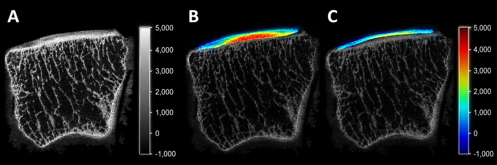
Spatial Biomedical Measurements
Imaging data provides anatomical, structural, and quantitative visual evidence that can be combined with clinical variables.
Time Series & Biosignals
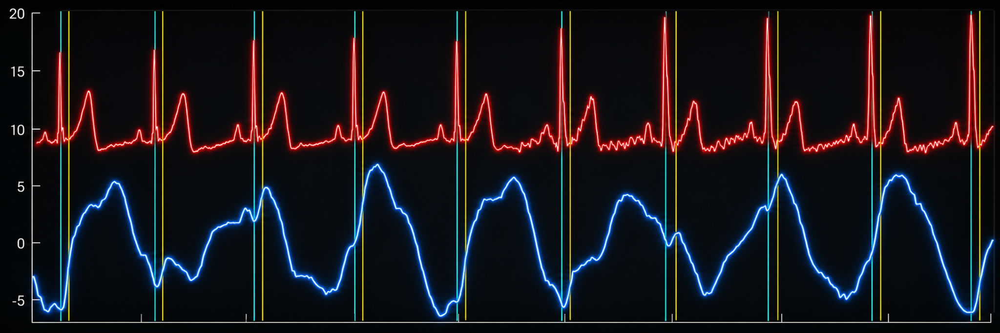
Temporal Signal Streams
Physiological waveforms and sensor traces capture dynamic behavior, periodic events, and changing state over time.
High-Dimensional Tabular Data
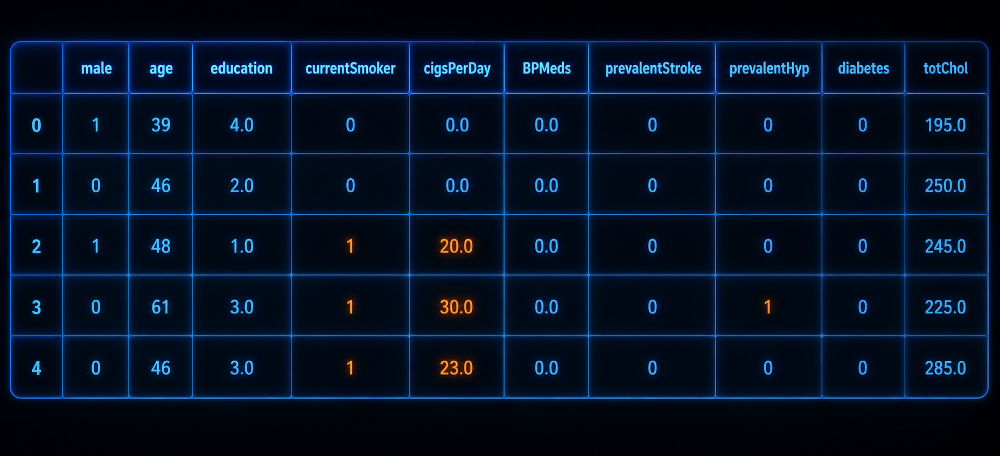
Structured Clinical Records
Rows, features, labels, and covariates enable statistical analysis, cohort definition, and predictive model development.
Unstructured Text Data
Narrative and Expert Knowledge
Documents, reports, and contextual knowledge assets support retrieval, summarization, and human-readable interpretation.
Data Interpretation & Predictions
Multivariate Group Analysis
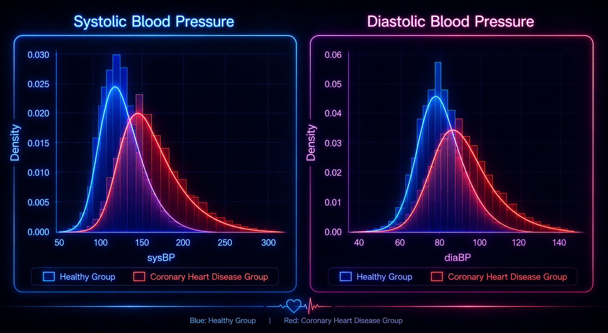
Comparative Risk Distributions
Overlapping group profiles compare healthy and disease cohorts, helping quantify separation, overlap, and shifts across clinical measurements.
Labels & Distribution Profiles
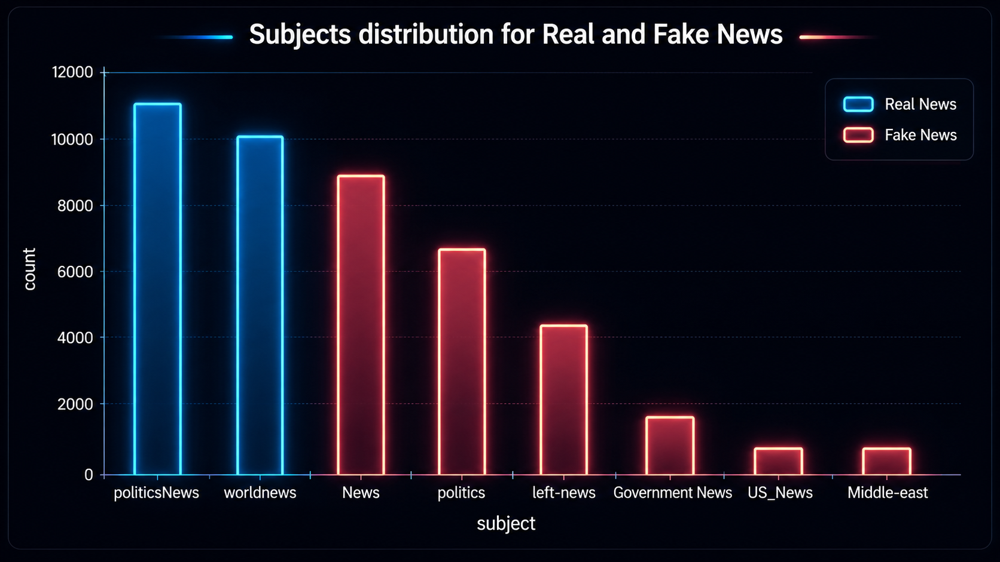
Outcome Distribution Analysis
Class prevalence and category imbalance highlight sampling patterns, baseline risks, and where model evaluation requires care.
Density & Correlation Maps
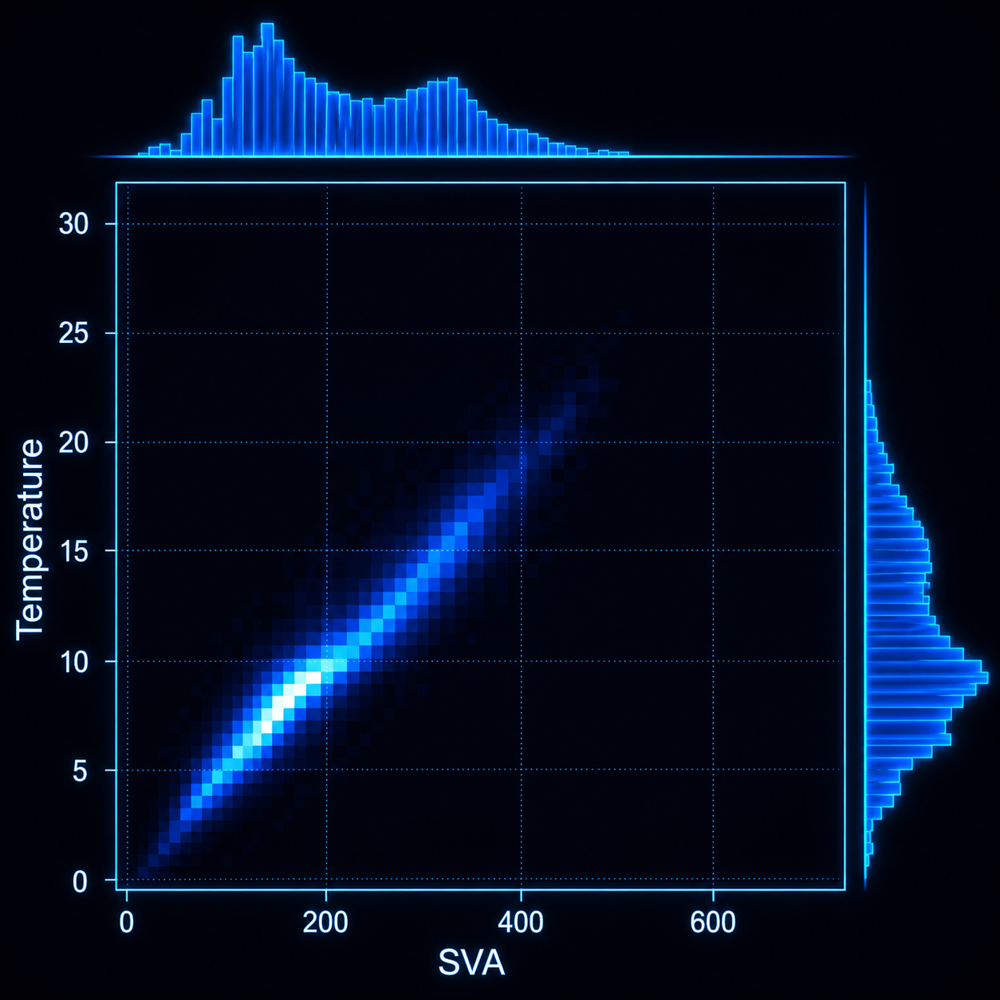
Joint Structure Exploration
Density maps and marginal histograms expose nonlinear associations, clusters, outliers, and interaction patterns between variables.
Cross-Correlation Heat Maps
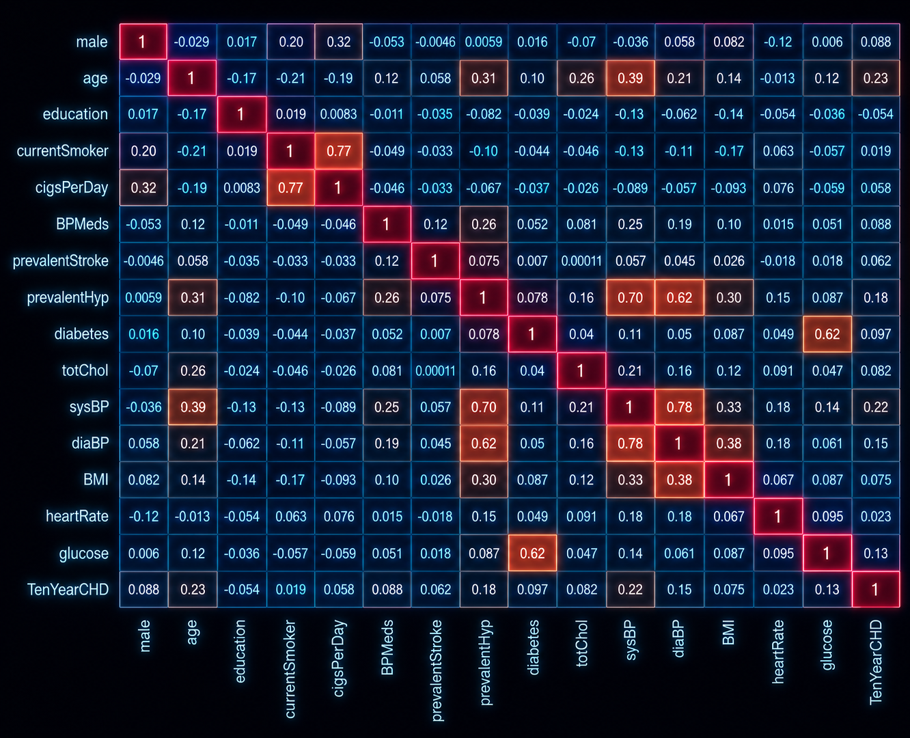
Multivariate Dependency Structure
Correlation maps summarize how clinical features move together, revealing redundancy, coupled predictors, and interpretable variable groups.
Classification Report
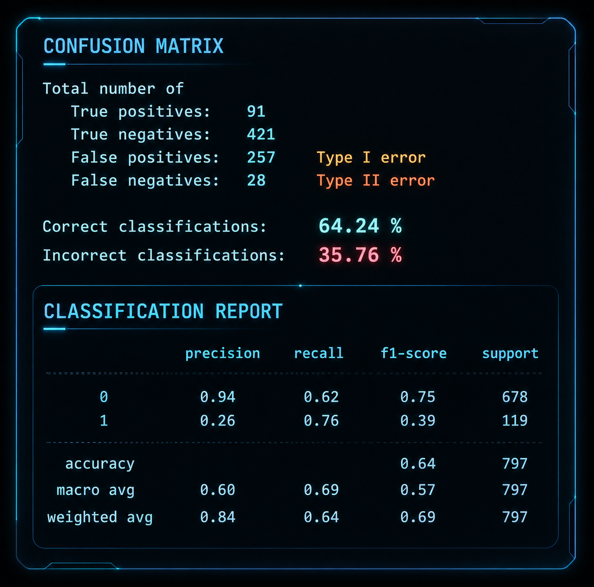
Model Performance Summary
Confusion metrics, class-level precision, recall, and f1-score reveal error modes and tradeoffs between sensitivity and specificity.
Data Engineering
Feature Engineering
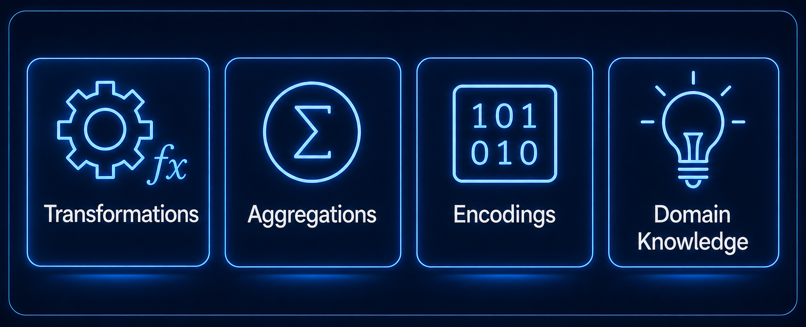
From Raw Signals to Predictors
Transformations, aggregations, encodings, and domain knowledge convert raw measurements into robust model-ready features.
Data Pipeline
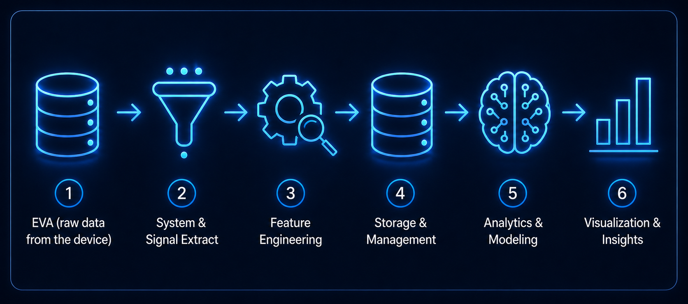
Reliable Analytical Workflow
Data flows from acquisition and signal extraction through feature processing, storage, modeling, visualization, and actionable insights.
Database Management
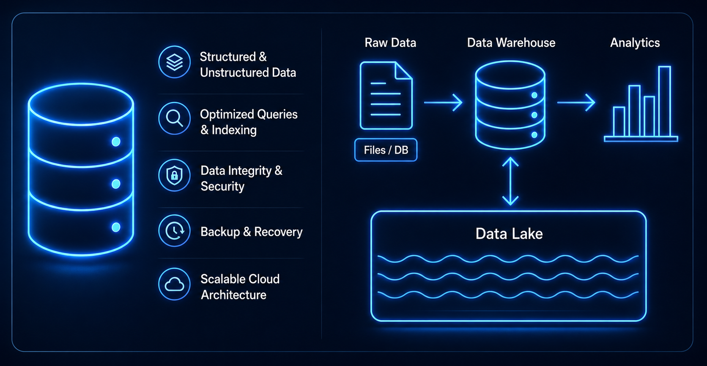
Governed Storage Foundation
Structured and unstructured data are organized for efficient queries, indexing, data integrity, backup, recovery, and cloud scalability.
Data Platform Development & Maintenance
Architecture
Processing
& Alerting
Optimization
& Automation
& Compliance
& Governance
& Uptime